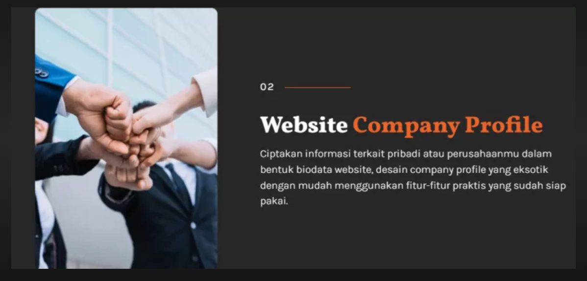
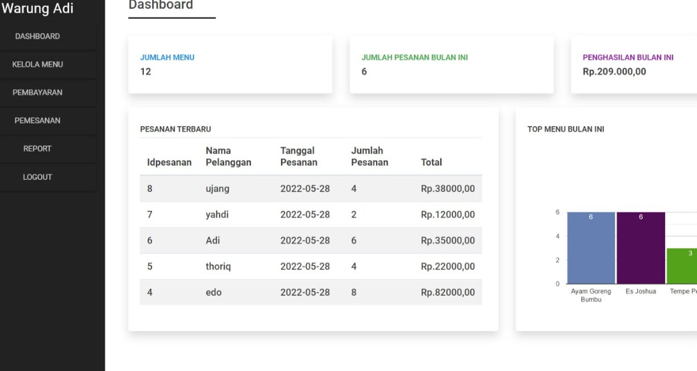
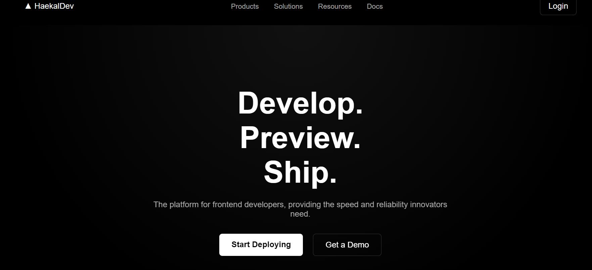

Saya membangun website yang cepat, dan tampak profesional. Dari desain hingga deployment — mari buat sesuatu yang bersama.
Halo, saya Haekal Alkhuarizmi Rambey . Saya berasal Dari UMSU, Fakultas FIKTI, Jurusan SI, Saya seorang Web Developer yang fokus pada pembuatan website modern, responsif, dan profesional.
Saya Haekal Alkhuarizmi Rambey , seorang mahasiswa dan Web Developer yang berfokus pada pembuatan website modern, responsif, dan profesional. Saya memiliki minat besar pada frontend development serta UI/UX design.
Saya senang mempelajari teknologi baru dan mengembangkan solusi digital yang membantu bisnis maupun personal branding tampil lebih optimal di internet.
Mengerjakan berbagai project website company profile dan landing page modern menggunakan HTML, CSS, dan JavaScript.
Membuat aplikasi kasir berbasis Java dan MySQL menggunakan NetBeans.
Mengembangkan website responsif menggunakan Flexbox, Grid, dan deploy ke GitHub Pages.



Deploy your website in seconds with global CDN.
Built-in security and automatic HTTPS.
Automatically scale with zero configuration.
Track performance and optimize easily.